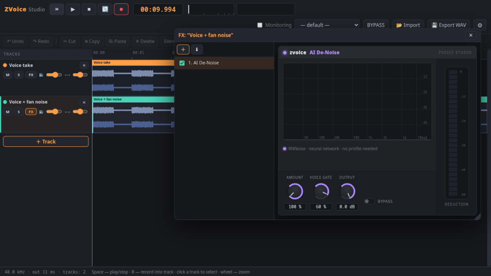
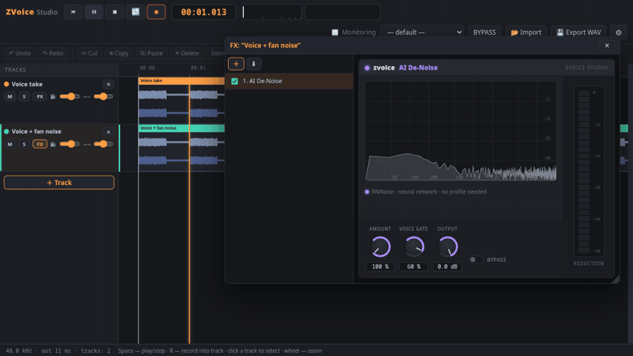

Record clean voice in seconds.
No installation. No account. No noise.
A free multitrack voice recorder with an AI noise remover and real-time FX chains — a Reaper-style workflow with FabFilter-style panels. Everything runs locally.



AI De-Noise (RNNoise neural network) — bypass toggled: the fan noise comes back and vanishes again
Windows · macOS (Apple Silicon & Intel) · Linux — GPL v3